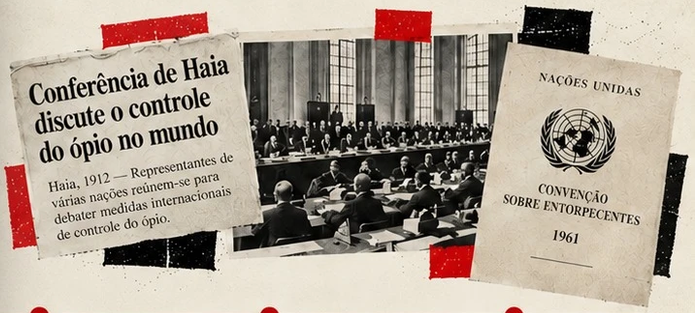
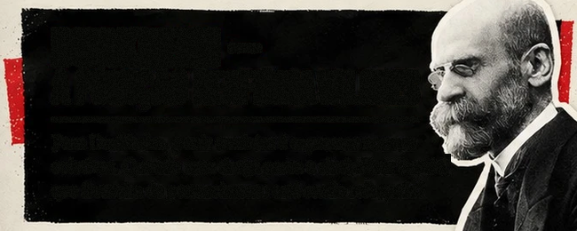
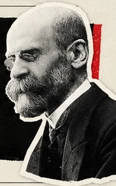

1909–1912
XANGAI E HAIA
Iniciativas
internacionais de
controle, inicialmente
com atenção ao ópio.




A proibição também tem história.
Iniciativas
internacionais de
controle, inicialmente
com atenção ao ópio.
Normas ampliam
a fiscalização e a
repressão a
determinadas
substâncias.
Regras internacionais
organizam controles,
usos autorizados e
enfrentamento
do tráfico.
A posse para
consumo próprio
também podia
resultar em prisão.
O artigo 28 deixa
de prever prisão
para porte destinado
ao próprio uso;
o tráfico continua
sujeito a prisão.
Para cannabis de consumo
pessoal, o STF afasta os
efeitos penais do porte,
mas a conduta não se torna
plenamente lícita: cabem
medidas educativas. Até
40 g ou seis plantas-fêmeas,
há presunção relativa de
uso pessoal. Isso não
legaliza o comércio.
A lei distribui competências entre
polícia, Justiça e saúde e diferencia
categorias como “usuário” e “traficante”.
Uma classificação pode alterar
profundamente o tratamento
institucional recebido.
Estudos sobre o Brasil indicam que o
proibicionismo também se articulou à
estigmatização de grupos marginalizados.
Essa é uma interpretação histórica, não
uma explicação única de todas as
intenções da política.